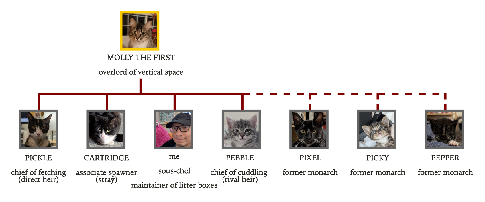

I’m a friend of five cats. Here’s a diagram showing where I stand within the cat hierarchy.

By day, I make the computer’s cache hierarchy less boring. Here’s a closer look at my research.
I occasionally solve problems at https://projecteuler.net/ and https://rosalind.info/. I like solving problems with geometric interpretations.